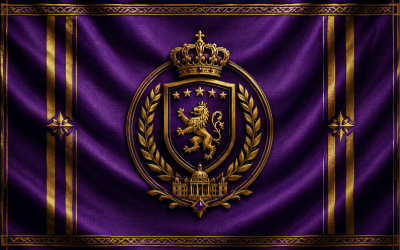
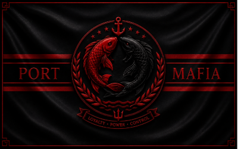
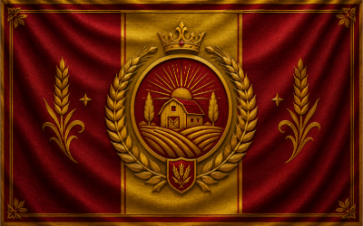
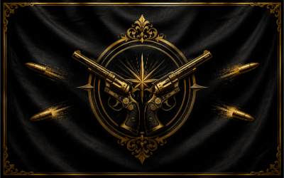
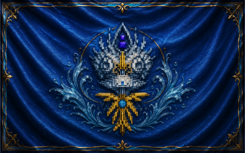
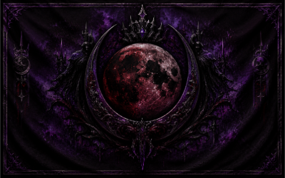

Binod World Government
Official Government Portal · Est. 2014
Official Government Portal · Est. 2014
| Nation | Capital | Member Since | Government Type | Administrative Role | Visa Fee |
|---|---|---|---|---|---|
| 🏰 Bavaria | New Bavaria | 2014 — Founding | Parliamentary Republic | Finance & Central Administration | 40 emeralds |
| ⚓ Port Mafia | Port City | 2014 — Founding | City-State Council | Maritime Trade & Harbour Authority | 50 emeralds |
| 🌿 Kasukabey | Kasukabey City | 2014 — Founding | Democratic Republic | Agriculture & Food Security | 40 emeralds |
| 🏙 Veromia | Veromia Central | 2015 | Trading Republic | Commerce & Trade Regulation | 60 emeralds |
| 🌊 Aquriass | Aquriass Harbour | 2016 | Maritime Republic | Naval Operations & Water Resources | 70 emeralds |
| 🌙 Noctyria | Noctyr Prime | 2024 — Newest Nation | Strategic Directorate | National Security & Defense Administration | 100 emeralds |

| Capital | New Bavaria |
| Government Type | Parliamentary Republic |
| Member Since | 2014 — Founding Nation |
| Administrative Role | Finance & Central Administration |
| National Strength | Institutional Governance & Economic Stability |
| Official Language | English |
| National Currency | Emerald (BWG Standard) |
| National Motto | "In Ordine Prosperitas" |
| Visa Fee | 40 emeralds |
Bavaria is one of the six founding Member States of the Binod World Government, established in 2014 as part of the original confederation. Governed as a Parliamentary Republic, Bavaria has built a strong tradition of civic institutions, democratic accountability, and principled public administration throughout its history within the Binod World.
Bavaria's economy is characterised by disciplined fiscal management, sustainable economic development, and robust institutional frameworks. The nation's administrative capacity and governance standards are consistently among the highest in the Binod World, and Bavarian models of public governance are widely regarded as a benchmark for administrative excellence across all Member States.
With a proud heritage of civic engagement, economic resilience, and democratic governance, Bavaria has been a consistent and stabilising presence in the Binod World Government since its founding. Its leaders have historically played an active and constructive role in World Government affairs, contributing significantly to the collective development and prosperity of the Binod World.

| Capital | Port City |
| Government Type | City-State Council |
| Member Since | 2014 — Founding Nation |
| Administrative Role | Maritime Trade & Harbour Authority |
| National Strength | Maritime Commerce & Trade Networks |
| Official Language | English |
| National Currency | Emerald (BWG Standard) |
| National Motto | "Commerce Unites Nations" |
| Visa Fee | 50 emeralds |
Port Mafia is a founding Member State of the Binod World Government and one of the Binod World's most strategically significant city-states, established as part of the original BWG confederation in 2014. Governed by a City-State Council, Port Mafia administers key maritime trade routes and harbour infrastructure that are essential to the movement of commerce across the Binod World.
As the primary maritime hub of the Binod World Government, Port Mafia's harbour authority manages the flow of goods and commerce, facilitates diplomatic exchange between Member States, and upholds the trade frameworks upon which the Binod World's broader economy depends. Port Mafia's central geographic position has made it a natural meeting point for inter-national trade and diplomatic dialogue.
Port Mafia has a long and active tradition of diplomatic engagement within the Binod World. Its leaders have historically played a significant role in inter-nation negotiations, the development of trade agreements, and the promotion of commercial cooperation across the Binod World Government. The city-state's harbour authority is regarded as one of the most professionally administered institutions in the confederation.

| Capital | Kasukabey City |
| Government Type | Democratic Republic |
| Member Since | 2014 — Founding Nation |
| Administrative Role | Agriculture & Food Security |
| National Strength | Agricultural Output & Cultural Heritage |
| Official Language | English |
| National Currency | Emerald (BWG Standard) |
| National Motto | "Rooted in Heritage, Growing Together" |
| Visa Fee | 40 emeralds |
Kasukabey is a founding Member State of the Binod World Government, renowned for its rich cultural heritage, agricultural traditions, and deep commitment to democratic governance. Established in 2014 as part of the original BWG confederation, Kasukabey places civic participation, cultural preservation, and community-centred governance at the heart of its national identity.
Kasukabey's agricultural sector is one of the most productive in the Binod World, supplying essential food resources and raw materials to Member States across the confederation. The nation's open and welcoming border policy — reflected in one of the lowest visa fees in the Binod World — demonstrates its long-standing commitment to international openness, hospitality, and cross-cultural exchange.
Kasukabey's educational institutions and cultural programmes are among the most respected in the Binod World, and the nation has consistently contributed to the broader cultural and intellectual development of the confederation. Its leaders are known for principled, transparent governance and strong community representation in national and World Government affairs.

| Capital | Veromia Central |
| Government Type | Trading Republic |
| Member Since | 2015 |
| Administrative Role | Commerce & Trade Regulation |
| National Strength | Commercial Trade & Diplomatic Networks |
| Official Language | English |
| National Currency | Emerald (BWG Standard) |
| National Motto | "Trade Builds Bridges" |
| Visa Fee | 60 emeralds |
Veromia joined the Binod World Government in 2015, bringing with it a well-established tradition of commerce, principled trade regulation, and cross-border economic cooperation. Governed as a Trading Republic, Veromia's national model is built on open and transparent markets, constructive trade negotiation, and the sustainable development of commercial networks across the Binod World.
Veromian trade missions operate throughout the Binod World, fostering economic partnerships and facilitating the efficient movement of goods and services across Member States. The nation's diplomatic corps is widely regarded as one of the most skilled in regional affairs, and Veromia has consistently contributed to the development of trade policy at the World Government level.
Veromia's economic governance and treasury management have been consistently strong throughout its membership in the BWG. Its leaders are recognised for their strategic approach to commerce, their active participation in World Government legislative and advisory processes, and their contribution to the economic development of the broader Binod World community.

| Capital | Aquriass Harbour |
| Government Type | Maritime Republic |
| Member Since | 2016 |
| Administrative Role | Naval Operations & Water Resources |
| National Strength | Naval Capacity & Coastal Infrastructure |
| Official Language | English |
| National Currency | Emerald (BWG Standard) |
| National Motto | "Masters of the Tide" |
| Visa Fee | 70 emeralds |
Aquriass joined the Binod World Government in 2016, contributing significant maritime capacity, extensive coastal territories, and robust water resource management capabilities to the confederation. Governed as a Maritime Republic, Aquriass administers vital sea lanes and coastal infrastructure that support commerce, national security, and environmental stewardship across the Binod World.
The nation maintains a disciplined civic culture with a strong tradition of public service, institutional resilience, and national defence. Aquriass plays a central role in maintaining the maritime integrity of the Binod World, managing water resources, coastal security, and naval infrastructure in the public interest and in accordance with BWG standards.
Aquriass's measured border policy — reflected in its above-average visa fee — demonstrates a structured approach to national sovereignty and public order, consistent with its Maritime Republic governance framework. The nation's leaders are known for decisive, principled governance and a long-term commitment to the stability and prosperity of the Binod World.

| Capital | Noctyr Prime |
| Government Type | Strategic Directorate |
| Member Since | 2024 — Newest Nation |
| Administrative Role | National Security & Defense Administration |
| National Strength | Strategic Administration & Public Safety |
| Official Language | English |
| National Currency | Emerald (BWG Standard) |
| National Motto | "Vigilance in Silence" |
| Visa Fee | 100 emeralds |
Noctyria became the sixth and most recently admitted Member State of the Binod World Government in 2024, bringing a distinct national identity and a strong institutional commitment to national security, public order, and strategic administration. As the newest member of the BWG confederation, Noctyria has integrated rapidly into the World Government framework, establishing productive working relationships with all Member States.
Governed as a Strategic Directorate — a governance structure emphasising executive administration, strategic planning, and institutional resilience — Noctyria's national development programme focuses on public infrastructure investment, administrative capacity building, and active engagement with the broader Binod World community. The nation contributes significantly to the BWG's collective defence and public safety framework.
Noctyria's selective entry policy — reflected in the highest visa fee of any Member State — demonstrates the nation's commitment to structured border management and the responsible administration of public access. Those who visit speak of remarkable landscapes, a strong civic culture, and a national character defined by discipline, strategic thinking, and pride in Noctyria's unique place within the Binod World.